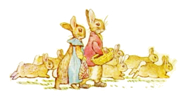
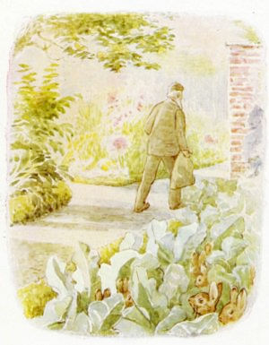
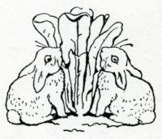
マグレガーさんと ピーターと ベンジャミンの ちいさな おともだち みんなへ
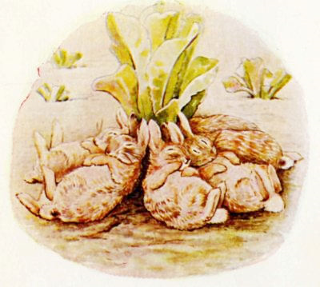
なんでも レタスを たべすぎると “さいみんこうか”が あるそうです。
わたしは レタスを たべても ねむくなんか なりませんが、 そうはいっても わたしは あなうさぎでは ありません。
さいみんこうかが てきめんだったのは、 なによりも ばにばにきょうだいの ことなのです！
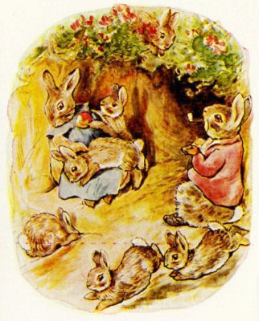
おとなに なった ばにばにベンジャミンは いとこの フロプシーと むすばれました。 だいかぞくを つくったこともあって、 せいかつは かつかつでしたが とても にぎやかでした。
こどもたちの それぞれの なまえは わすれてしまいましたが、 まとめて フロプシーさんとこの ばにばにきょうだいと よばれています。
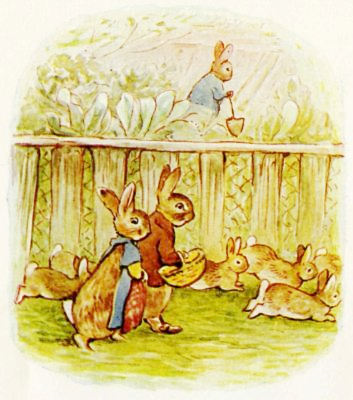
いつも まんぞくに たべられたわけでは ありませんので ―― ベンジャミンは はたけを もっている フロプシーの おとうと、 あなうさピーターのところへ いっては、 よく キャベツを いただいていたものです。

たまに あなうさピーターのところにも わける キャベツの ないことが ありました。
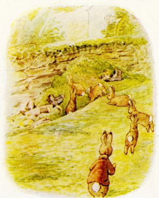
そういうときには ばにばにきょうだいが のはらを こえて、 マグレガーおじさんの おにわの うらにある おほりの なかの ごみやまへと むかいます。
マグレガーおじさんの ごみやまは ごちゃまぜに なっていて、 ジャムのびんが あったり かみぶくろが あったり、 はたまた しばかりきに かられた くさの かたまり （これは いつも べとべとで）、 それから くさった ペポカボチャが ころころ、 はきふるしの ブーツが ひとつふたつ。 ところが あるひ ―― なんということでしょう！ ―― そだちすぎて はなまで さかせてしまった レタスが まとまったかず みつかったのです。
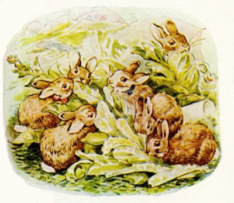
ばにばにきょうだいは それはもう レタスを たらふく たべました。 すると じゅんじゅんに １ぴきまた１ぴきと ねむけに まけて、 かられた しばのうえに そのまま たおれていきます。
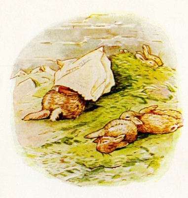
ベンジャミンは こどもたちほど やすやすと まけはせずに、 おちてしまうまえ あたまに かみぶくろを かぶって はえよけにするくらいには めを あけて もちこたえていました。
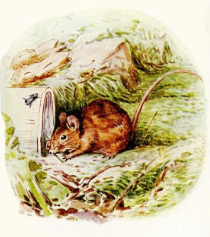
ばにばにきょうだいは あたたかい ひざしのもと すやすやと ねむっています。 おにわの むこうの しばちからは とおく しばかりきの カタカタという おとが きこえてきます。 おほりの へりのあたりで あおばえが ぶんぶん いったり、 １ぴきの ちいさな おばさんねずみが ジャムのびん ふきんの ごみを あさったり していました。
（わたしには なまえも わかりますよ、 おねずみトマシーナ、 おっぽの ながい もりねずみです。）
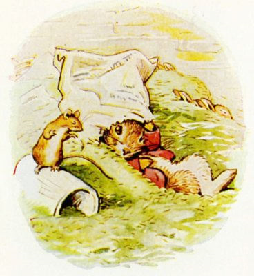
そのねずみさんが かみぶくろのうえを かさこそ、 そこで ばにばにベンジャミンが めを さましました。 ねずみさんは ふかく おわびして、 じぶんは あなうさピーターの しりあいだと つげます。
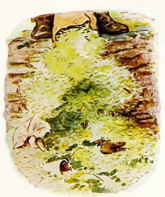
ねずみと ベンジャミンが へりのすぐしたあたりで しゃべっていると、 あたまのうえから ずっしりした あしおとが きこえてきました。 するとふいに マグレガーおじさんが かりとった しばを どっさりと、 ねむっている ばにばにきょうだいの まうえに あけだしたのです！ ベンジャミンは かみぶくろに かくれて ちぢみあがりました。 ねずみさんは ジャムのびんに みを かくしました。
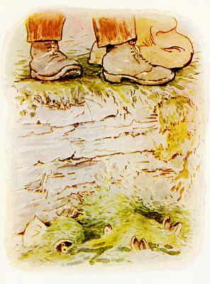
こうさぎたちは くさの ふりそそぐなか きもちよさそうに にやにやと おやすみしています。 レタスの さいみんこうかが つよかったので、 めざめることは ありません。
みんな ゆめのなかで、 ママの フロプシーに ほしぐさの ベッドへ おしこまれているのです。
マグレガーおじさんは ふくろのなかを みんな ぶちまけたあと、 したを のぞきこみました。 すると おもしろいことに くさのやまから ぴょこんと ちゃいろい こみみのさきが とびだしているのが みえるのです。 しばらく じろりと ねめつけました。
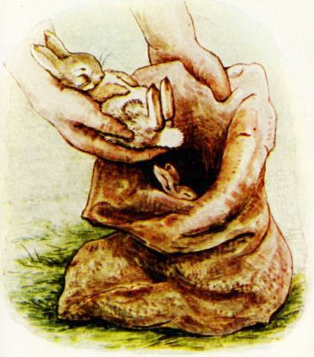
やがて そのひとつに はえが とまると みみが ぴくりとしました。
マグレガーおじさんは ごみのやままで よじおりて ――
「ひい、 ふう、 みい、 よお！ いつ！ むうも こうさぎ！」と いいながら、 つかんで ふくろのなかへ いれていきます。 ばにばにきょうだいの ゆめのなかでは ママに ベッドのうえで ねがえりを うたされたことに なっていました。 ねむっている あいだに ちょっとくらい めは あいても、 やっぱり めざめるまでは いかないのです。
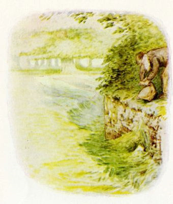
マグレガーおじさんは ふくろを しばると、 おほりのうえに おいて そのばを はなれました。
しばかりきを かたづけに いったのです。

そのあいだに （おうちで るすばんを していた） ママの ばにばにフロプシーが のはらを ぬけて やってきました。
まさかと ふくろを ながめて、 みんな どこへ いったんだろうと むなさわぎ。
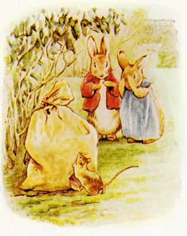
すると ねずみさんが ジャムのびんから でてきて、 ベンジャミンも かぶっていた かみぶくろを はずして、 ふたりして なげかわしい いちぶしじゅうを かたります。
ベンジャミンと フロプシーには どうすることも できません。 ひもを ほどこうにも むりなのです。
けれども おねずみおばさんは あたまの はたらく かたでした。 ふくろの すみを かじって あなを あけたのです。
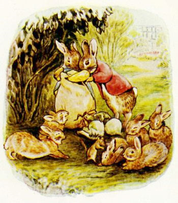
こうさぎたちは ひきずりだされ、 たたきおこされました。
パパと ママは からのふくろに くさった ペポカボチャ みっつと つかいふるしの くつブラシを ひとつ、 いたんだ カブを ふたつ つめこみます。
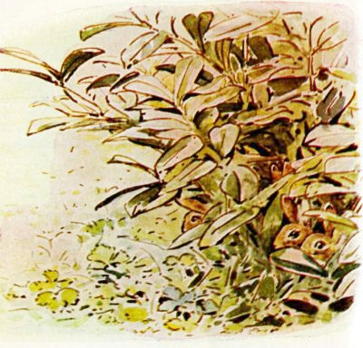
そして みんなして しげみに かくれ、 マグレガーおじさんが くるのを まちうけました。
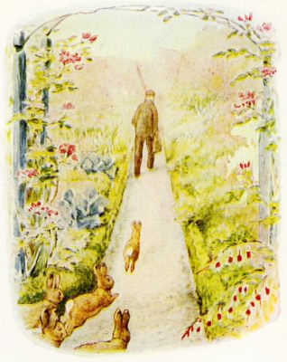
マグレガーおじさんは もどってくると ふくろを とりあげて もちさります。
そうとう おもたいのか てから ぶらんぶらん。
ばにばにきょうだいは うまく あいだをとって あとを おいかけます。
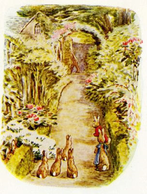
おうちに はいっていくのが みえました。
それから まどに にじりよって ききみみを たてます。
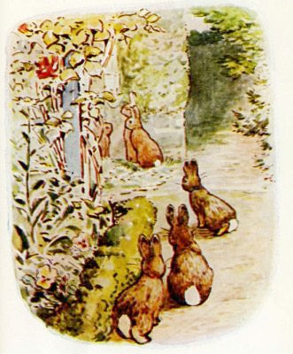
マグレガーおじさんは いしじきの ゆかに ふくろを なげおろしました。 あれでは ばにばにきょうだいが はいっていようものなら おおけがしていたでしょう。
きこえてくるのは ゆかのうえに いすを ひきずる おとと ほくそえむ こえ ――
「ひい、 ふう、 みい、 よお、 いつ、 むうも こうさぎ！」と マグレガーおじさん。
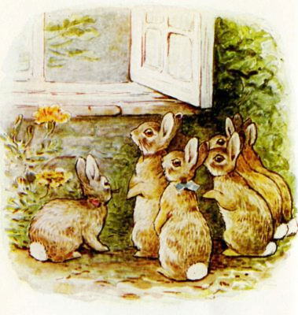
「はあ？ なにさそれ？ また はたけでも あらされたのかい？」と マグレガーおばさんが たずねました。
「ひい、 ふう、 みい、 よお、 いつ、 むうも ぷりぷり こうさぎよ！」と マグレガーおじさんは ゆびおりしながら くりかえします。 「ひい、 ふう、 みい ――」
「ばかは およしよ。 なんの つもりだい、 いかれ じいさんや。」
「ふくろんなかよ！ ひい、 ふう、 みい、 よお、 いつ、 むう！」と こたえる マグレガーおじさん。
（そのとき、 ばにばにきょうだいの すえっこが まどの でっぱりに あがりました。）
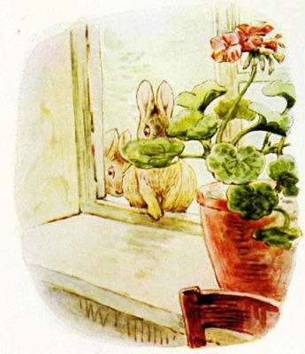
マグレガーおばさんは ふくろを つかんで さわってみたのですが、 どうも たしかに ６ぴき いるけれども、 よぼよぼの うさぎじゃないのか、 かちこちで みんな かたちが ふぞろいだよと いいます。
「たべるにゃ むかないね。 でも けがわは あたしの おふるの コートの うらじに するにゃあ もってこいかも。」
「コートの うらじだと？」と マグレガーおじさんは こえを はりあげます。 「こいつは うっぱらって わしの たばこだいに するんよ。」
「うさぎたばこ
 けがわを はいで くびを もぐんだよ。」
けがわを はいで くびを もぐんだよ。」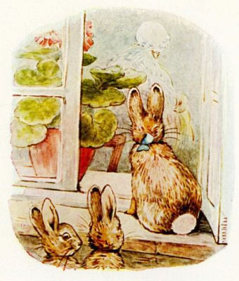
マグレガーおばさんが ふくろの ひもを ほどいて てを なかに いれます。
じぶんの さわっているのが やさいと わかると、 ぷんすかと おこりだしました。 マグレガーおじさんに 「わざと やったのか」とまで いうのです。
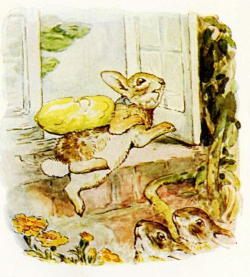
すると マグレガーおじさんも ぷんすか。 くさった ペポカボチャが ひとつ ちゅうを とんで、 だいどころの まどの ところを ぬけ、 ばにばにきょうだいの すえっこに ぶちあたりました。
いたいの なんの。
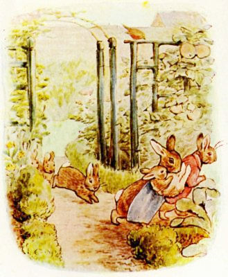
そこで ベンジャミンと フロプシーは もう うちに かえったほうが いいと おもいました。
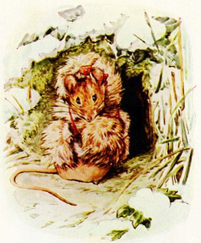
こうして マグレガーおじさんは たばこが てに はいらず、 マグレガーおばさんも うさぎの けがわを てに いれそこないました。
けれども つぎの クリスマス、 おねずみトマシーナは うさぎの けいとを もらいました。 しかも じぶんの コートや ずきん、 おしゃれな マフや あたたかい てぶくろを みんな つくれるくらい たくさん。
（おしまい）